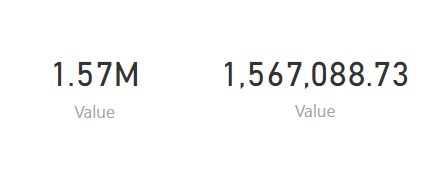

Over the first four posts in this series, we’ve learned how to select charts, how to lay out a dashboard using those charts, and how to maximize the impact of these charts. In this final post in our series, we’ll look at a couple of simple, but important tips for improving the effectiveness of dashboards.
Format Your Numbers
Numbers are obviously a key part of any dashboard, and a key consideration is how to present them. Rounding can be a particularly important issue. Rounding number means you lose some element of precision, but makes the number easier to read. On a dashboard, quick understanding of numbers is a priority, so rounding us usually a good thing.
Below we see two cards telling us the total value generated by the consultants of a fictional company, Sretnap Partners. The version on the left expresses the value in millions, to two decimal places, while the version on the right displays the exact number.

The version on the right is more precise, but is harder to interpret quickly. For larger numbers like these, some viewers may have to spend several seconds counting the commas, and working out whether the number is a million or a billion. It’s better to provide the rounded number, which is easier to interpret quickly
Avoid Dashboard Junk
In a previous post in this series, we mentioned how the focus of a chart should be on communicating some key message from the data, and that extra visual effects were generally bad practice. This idea was largely popularized by Edward Tufte, probably the leading expert in the field of visual design. Tufte coined the term “chartjunk” to describe any visual effects added to a chart that do not help explain the information on the chart, but are only included for the sake of appearances. These effects include excessive text, noisy backgrounds or 3D effects. As we mentioned previously,effects like these are generally a bad idea.
In the same way as you should avoid chartjunk, you should also avoid what I’m going to call dashboard junk. Dashboard junk can take many forms, including:
- Text: Previously, we said that tables were a poor choice of visualization to include on dashboards, as they cannot be read and processed at a glance. For similar reasons, large blocks of text should be avoided. Small pieces of text, such as titles, are usually fine, but ensure they are not so large that they consume much of the screen or so brash that they distract attention from numbers and charts.
- Formatting: Formatting tools such as borders, grid-lines and boxes should be used sparingly, if at all. You might think these can be useful in dividing a dashboard into different areas, however remember that a dashboard should focus on a small number of topics and issues. If you feel a need to divide up the dashboard, it may indicate you are trying to put too much information on it.
- Images: Background image are usually a distraction and should generally be avoided completely. A plain, light background is better. Dark backgrounds can make text too difficult to read. Including a company logo can be justified if your dashboard is being distributed externally, but is probably unneeded for an internal dashboard. Presumably everyone knows their own company’s identity?
Summary
This brings to an end our series on designing effective dashboards. Let’s take a moment to recap what we’ve covered in this series.
- Our first post outlined the importance of dashboards, and the various factors that should be considered before you start to create a dashboard
- The second post outlined some tips for selecting the right chart in a given situation. We outlined when to use various common charts and gave some general tips for selecting charts.
- The third post outlined how to layout dashboards, including how many visuals to include and where to place different visuals on the dashboard.
- The fourth post gave various tip for maximizing the impact of individual charts and the dashboards that are ultimately created from them.
Creating dashboards is easier than ever, but creating high quality dashboards that communicate their message with impact remains a task that requires some level of effort. While modern dashboard software will implement a lot of best practices for you, you shouldn’t assume it will always be perfect, and it’s good to understand the principles.
Whether you create dashboards yourself, or whether you view the dashboards created by other people, or even if you make important decision using business dashboards, the tips we’ve seen in this series should hopefully leave you better able to extract value from dashboards for your company.